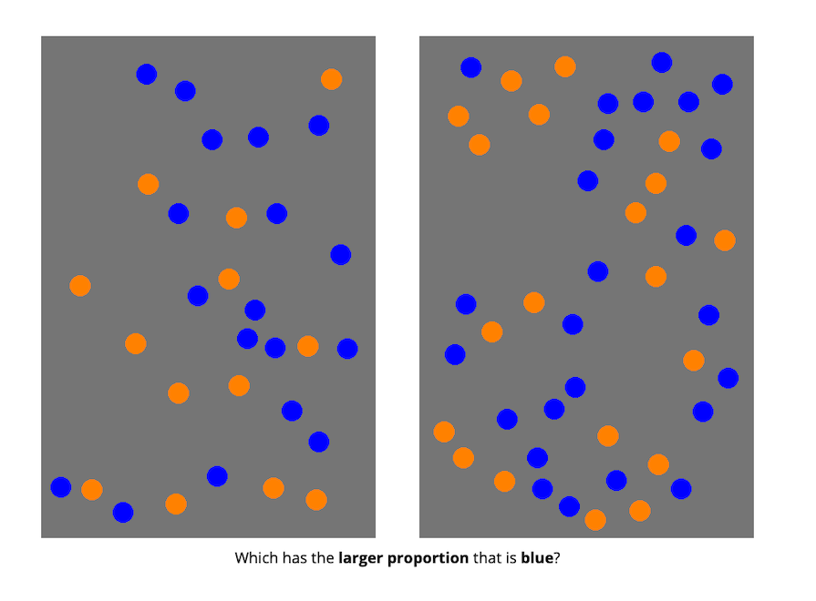
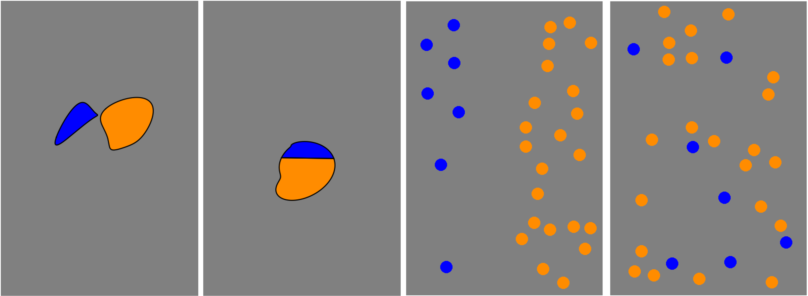
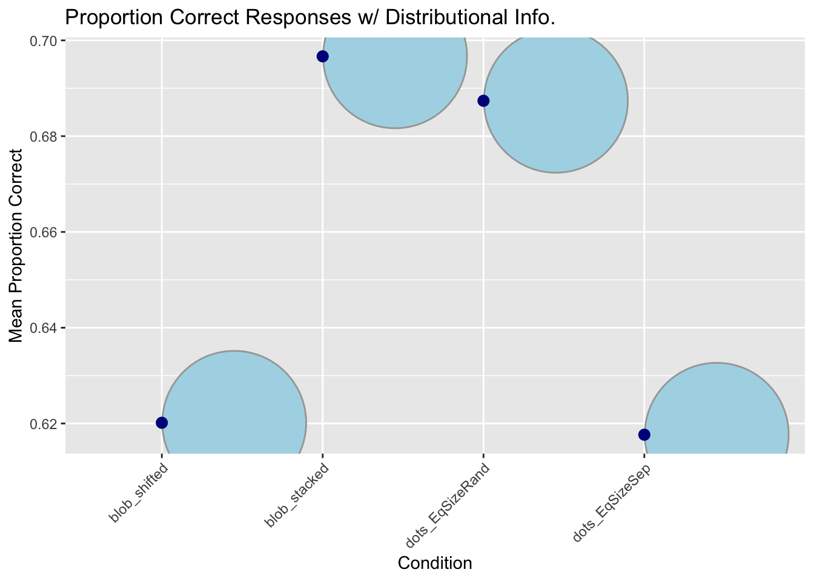
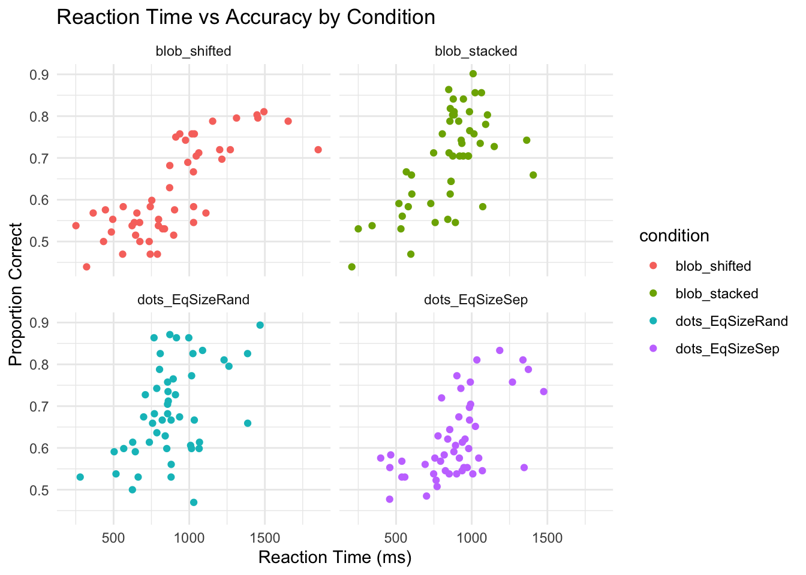
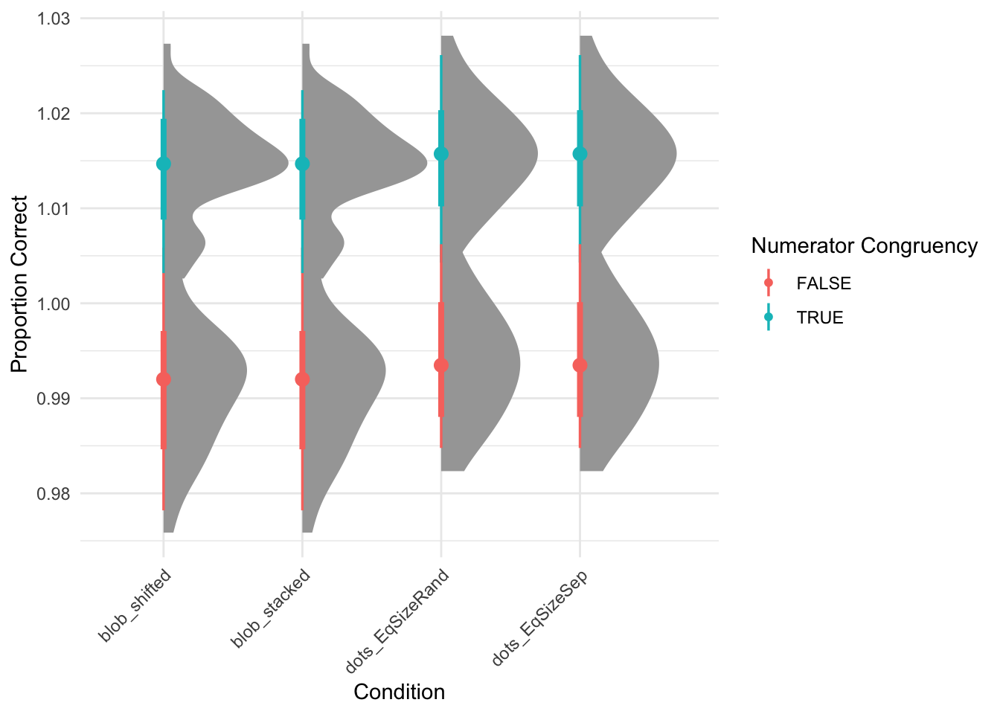

1 Rutgers University, New Brunswick
Comparing proportions is sometimes very hard! But, even infants seem to be able to do it a little bit. The purpose of this science project was to better understand how well people compare proportions when they are presented in different formats. The purpose of this class assignment is to take the R-code and plots we’ve been generating over the last several weeks and put it all together into one poster format.
A total of 99 adults participated in the study.
First, participants were introduced to a story about a magic ball and that the outcome (i.e., blue or orange) depended on the proportions. They were then asked to compare the proportions of different images.
In other words, participants were shown two images of the same kind at the same time and were asked to decide which had a higher proportion of the shape (or dots) colored in blue.

There were four different conditions that changed what kinds of images the participants saw:


When considering only format type (blobs vs. dots), this plot reveals no clear systematic difference in average performance between the two formats, as both blob and dot conditions show similar ranges of accuracy (approx 62-69% correct responses) w/ substantial overlap in their distributions.

According to this plot, reaction time tends to have an overall positive correlation. As reaction time increases, the proportion correct appears to rise. (However, there is some variability with blob_stacked and dots_EqSizeSep).

Across all four visualization conditions, participants consistently performed better when the numerator was congruent (TRUE) with the overall ratio compared to when it was incongruent (FALSE).
The three key findings from these three objectives are format effect (blobs vs. dots), speed-accuracy relationship, and the numerator congruency effect. The choice between blob or dots format does not appear to meaningfully impact performance accuracy. There appears to be a speed-accuracy tradeoff, where participants who took more time tended to achieve a higher accuracy. However, there was some variation in the blob_stacked and dots_EqSizeSep formats. There was also a consistent pattern that emerged across all visualization types where performance was superior when the numerator aligned with the overall ratio.
Personally, the most annoying thing about this assignment (and making posters/presentations in R in general) is not knowing what is going to print before knitting. I think labeling code chunks can be a pain as well. But at least R tells you immediately after knitting what the issue is.
The most satisfying thing about this assignment is seeing everything you intend to print while knitting your poster.